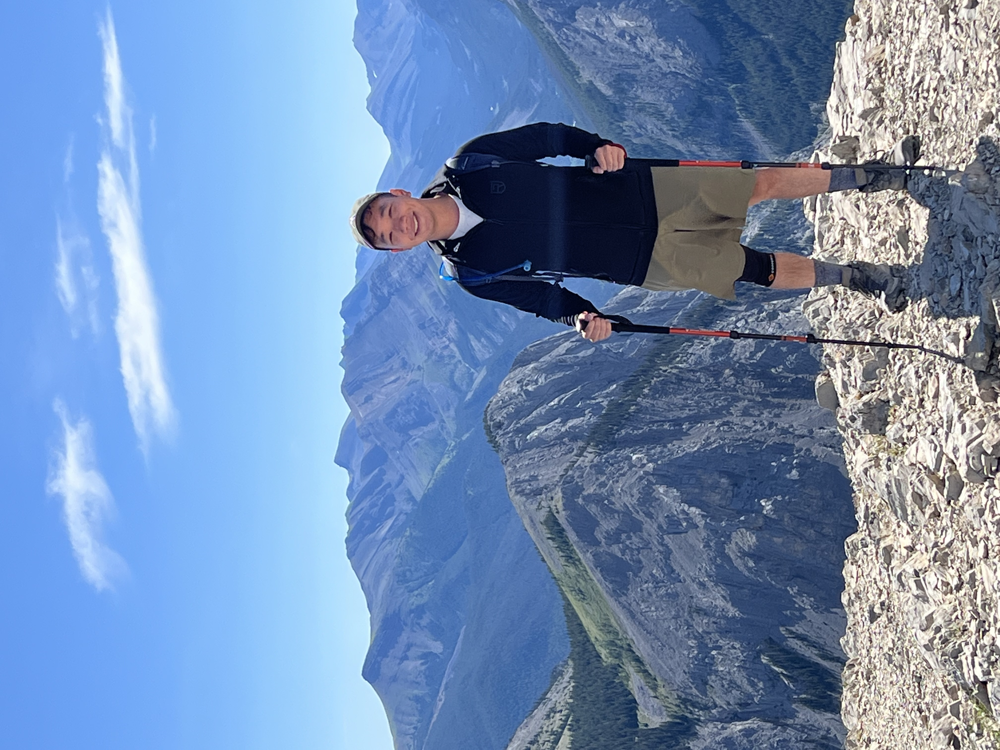
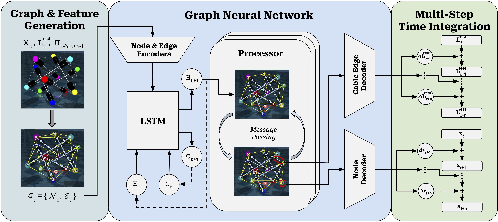
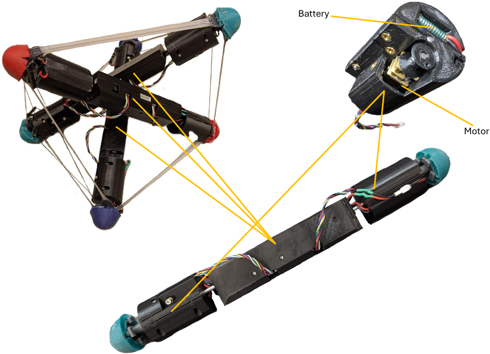
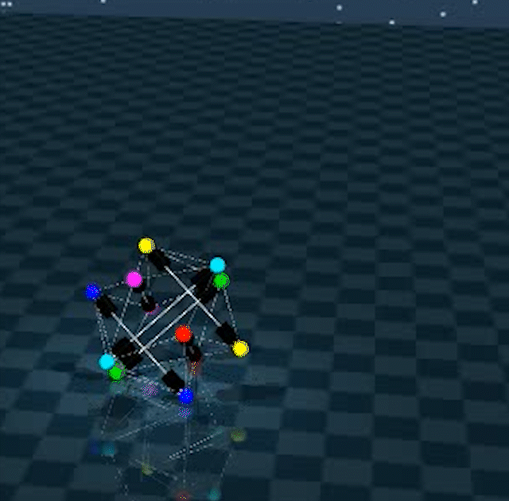

Nelson Chen
Ph.D. Candidate · Computer Science (AI & Robotics)
Rutgers University Co-advised by Prof. Mridul Aanjaneya & Prof. Kostas Bekris
I'm a computer science Ph.D. candidate specializing in AI & Robotics at Rutgers University. My research focuses on differentiable simulation and learning-based control for tensegrity robots that are compliant, cable-driven structures with rich contact dynamics. I build graph neural network methods for learning robot dynamics and integrate them with model predictive controllers for real-world navigation. Previously, I worked as a Senior Data Scientist building NLP and document-understanding systems, and completed my M.S. in mechanical engineering at UC Berkeley and B.S in mechanical engineering at Northwestern.

News
Selected Publications



